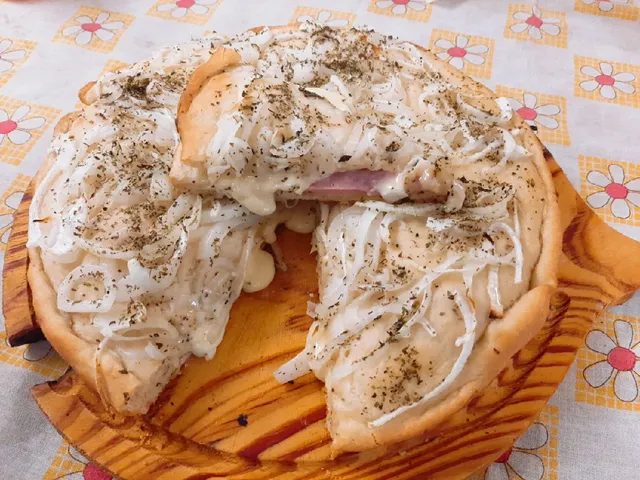

Fugazzetta an Argentine classic
The Fugazzetta is an original pizza from Buenos Aires, Argentina noteworthy for the amount of cheese, onion and especially for being filled with cheese between two layers of dough.
The Fugazzetta has its roots from the Italian community from Argentina being a combination of characteristics from the Neapolitan pizza and the Focaccia. It was made by the Argentine pizza maker Juan Banchero, son of genoves, in the neighborhood of La Boca between the 1893 and 1932 with the inauguration of the Banchero pizzeria.